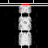

fldigi - NO CALLSIGN SET (receive-only alpha)
─
□
×
File
Audio
RX capture (use mic)
F3
TX generate (save audio file)
Playback (load audio file)
Ctrl+O
Stop audio
Save received text…
Ctrl+S
Clear received text
Import configuration…
Export configuration…
Op Mode
Loading modems…
Configure
Operator…
Sound card…
Modems…
Waterfall…
User interface…
Rig control…
External interfaces…
View
Channels
Docked scope
Received picture…
Full screen
Clear waterfall
Logbook
Open logbook
Log QSO
External logger
Help
Beginners' Guide
Online documentation...
Fldigi web site...
Reception reports...
Command line options
Audio device info
Build info
Event log
About
A
Browser receiver help
Download source code…
License
⌜Spot
⌜RxID
⌜TxID
⌜TUNE
14070.100
USB
LSB
3000
Frq
On
Off
In
Out
Call
Op
Az
Qth
St
Pr
Loc
▶
■
0:00 / 0:00
×
CQ ▸|
ANS ▸|
QSO ▸▸
KN Ⅱ
SK Ⅱ
Me/Qth
Brag
T/R
Tx ▸▸
Rx Ⅱ
TX ▸|
1
WF
◀
▶
◀
▶
x1
Ⅱ
NORM
◀◀
◀
▶
▶▶
QSY
Store
⌜Lk
⌜Rv
⌜T/R
Fldigi configuration
×
×
Received image
×
Skip APT
Skip phasing
End reception